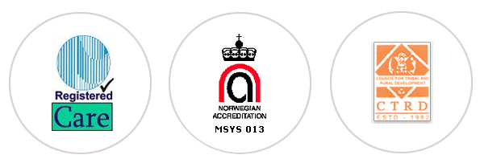

INTERNATIONAL COLLABORATION

COUNCIL FOR TRIBAL AND RURAL DEVELOPMENT (CTRD)
CTRD has collaborated with following international agencies for implementing different projects.
| Sl. No. | Agency |
| 1. | The University of Winnipeg, 515 Portage Ave, Winnipeg, MB R3B 2E9, Canada |
| 2. | Caritas Netherlandica Grote Marktstraat 452511 BH The Hague |
| 3. | World literacy of Canada 401 Richmond Street West, Toronto, ON M5V 3A8, Canada Studio 236 |
| 4. | MISEREOR Head Office, Mozartstrasse 9, 52064 Aachen, Germany. |
| 5. | ZAMBIA INSTITUTE OF NATURAL MEDICINE AND RESEARCH Springbok House, Ground Floor, opp South Gate Shopping Mall Chachacha Road,P.O. Box 36585 Lusaka |